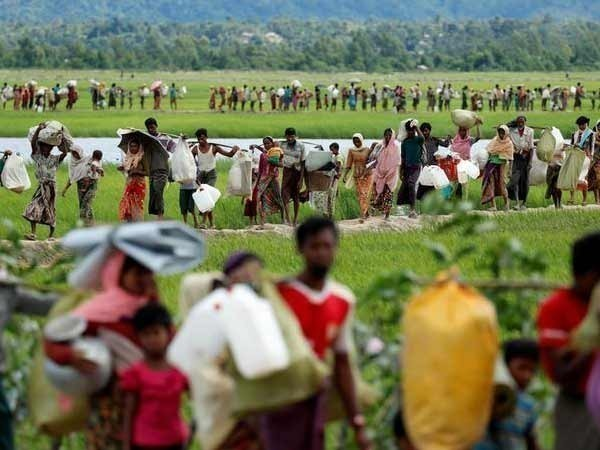
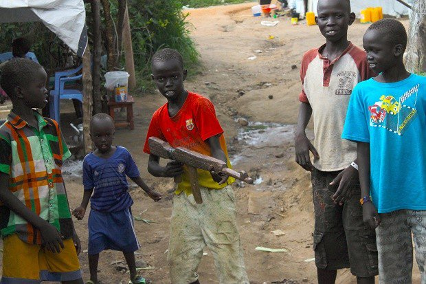

millions of Indonesians
Tens of millions of Indonesians will vote Wednesday in regional elections seen as a gauge of President Joko Widodo’s prospects for re-election next year in the world’s third biggest democracy. Widodo, known as Jokowi, is popular across the 17,000-island archipelago. But he has struggled to keep his economic growth plans on track, while the growing power of hardline Islamist groups who oppose him could throw up a formidable challenge, AFP reports. Some 152 million registered voters — more than half of Indonesia’s 260 million-strong population — are eligible to cast a ballot for 171 mayors, regional leaders and provincial governors. A key battleground is West Java, the county’s most populous province, where voters will decide whether to back Jokowi’s allies. A loss in the region could be a blow to the 57-year-old leader as he gears up for an expected repeat of the 2014 contest that saw him beat retired general Prabowo Subianto for the presidency. Subianto is believed to be planning to run again in the April 2019 presidential election. Authorities tightened security across the archipelago as voting got underway in the morning, with polls set to close later in the day. Results are expected by July 9. Indonesia has been on edge since a series of suicide bombings in the second biggest city of Surabaya last month stirred fears about Islamist militancy in the world’s biggest Muslim-majority country. Last week a cleric seen as a top messenger for the Islamic State group in Indonesia was sentenced to death for masterminding a 2016 suicide-and-gun attack in central Jakarta — raising concerns about retaliatory attacks by his supporters. The political power of hardline Islamist groups is at unprecedented levels in officially pluralist Indonesia. That power was highlighted when Jakarta’s first ethnically Chinese and Christian governor — a key Jokowi ally — lost his re-election bid last year over blasphemy allegations that later sent him to prison. Supporters of Basuki Tjahaja Purnama’s Muslim challenger galvanised the opposition and drew hundreds of thousands of protesters onto the streets of the capital to denounce him for insulting Islam. our near and dear ones can support us to have a clear and conclusive condition of our life. And parents are more than that obviously.
Amnesty International
Amnesty International, London-based human rights organization, on Wednesday released a detailed report that reveals new evidence of Myanmar's atrocities on Rohingya population. The report named 13 top military commanders the human rights group says should be prosecuted for crimes against humanity, quoting the report, UNB reports. The report is titled "We Will Destroy Everything." Amnesty said those words, spoken by a military commander in a recording of a telephone call obtained by the group's investigators, sum up the mindset of Myanmar soldiers in dealing with the Muslim Rohingya. About 700,000 Rohingya have fled into neighboring Bangladesh since last August to escape what United Nations and US officials have called an "ethnic cleansing" campaign by Myanmar's government.
Letter to Sabiha Jahan
Seventeen US states have sued the Trump administration over its "cruel and unlawful" break-up of migrant families. Democratic attorneys general from states including Washington, New York and California launched the lawsuit. The legal action objects to the policy of refusing entry to asylum seekers at the US-Mexico border. Meanwhile, a California judge has ruled that all families of undocumented immigrants separated at the US border must be reunited within 30 days. San Diego judge Dana Sabraw also said that children under the age of five must be back with their parents within 14 days as he granted the American Civil Liberties Union (ACLU) a preliminary injunction in a lawsuit filed over the family separations. Court papers filed by the ACLU on Monday contained numerous accounts of parents unable to locate or communicate with their children after they were separated by border officials. On Tuesday, Massachusetts, Delaware, Iowa, Illinois, Maryland, Minnesota, New Jersey, New Mexico, North Carolina, Oregon, Pennsylvania, Rhode Island, Vermont and Virginia plus the District of Columbia were the other states suing President Donald Trump's administration. In legal action filed with the US District Court in Seattle, Washington, Mr Trump's 20 June order to keep migrant families together was also described as "illusory". It is the first legal challenge over family separation from the states, which argue that the Republican president's executive order denies migrant families due process and the right to seek asylum. Speaking at a news conference in Brazil on Tuesday, US Vice-President Mike Pence warned undocumented immigrants not to "risk the lives of your children" by trying to enter the US illegally. He said he had a message "straight from my heart" for those planning a journey to America: "If you can't come legally, don't come at all." "Don't risk your lives or the lives of your children by trying to come to the United States on a road run by drug smugglers and human traffickers," Mr Pence added.
More than 10,000 children were killed
More than 10,000 children were killed or maimed amid armed conflicts worldwide last year, while others were raped, forced to serve as armed soldiers or caught in attacks on schools and hospitals, a United Nations report said Wednesday. A total of more than 21,000 violations of children's right were reported in 2017 - a sharp increase from the previous year, according to the annual "Children and Armed Conflict" report. The U.N. blames a U.S.-backed Arab coalition fighting in Yemen for at least half of the more than 1,300 child deaths or injuries recorded in that poor nation. They were victims of aerial and ground attacks by Saudi Arabia and the United Arab Emirates on Houthi rebels opposed to Yemen's internationally recognized government. Among the casualties tallied in the report were child soldiers as young as 11 fighting in Yemen's civil war and in other countries, the U.N. said. "The point is, these kids should not be treated like children of a lesser God; they deserve the same rights as every kid to live their lives at least meaningfully and to be given a chance at recovery," said Virginia Gamba, the U.N. special representative for children and armed conflict. She said the report left U.N. Secretary-General Antonio Guterres feeling "outraged." The 21,000 violations of children's rights included 10,000 who were slain or maimed, especially in Iraq, Myanmar, the Central African Republic, the Democratic Republic of the Congo, South Sudan, Syria and Yemen, the report said.
More than 10,000 children were killed

Dia Mirza bid for and bought an original six-sheet poster of the landmark film Mother India depicting the iconic Nargis Dutt for Rs 1.45 lakh in an auction. The actor, who features in a pivotal role in Sanju, a movie on Sanjay Dutt's life, wants to gift it to the Munna Bhai M.B.B.S. star. Dia bid for the poster at Osian's IIFA Auction at the recently concluded International Indian Film Academy (IIFA) Weekend and Awards in Bangkok. The poster of the 1957 movie Mother India was much in demand but the winning bid of Rs 145,000 came from the UN Environment Goodwill Ambassador Dia, known as much for her community services and activism as for her acting in cinema. She mentioned that she was buying the iconic poster and would like to offer it as a gift to Sanjay, read a statement. In Sanju, a Rajkumar Hirani directorial, Dia essays the role of Maanyata Dutt, Sanjay's current wife, opposite Ranbir Kapoor. The Osian's and IIFA collaboration saw the film fraternity put its weight firmly behind preserving and nurturing of India's rich cinematic culture and its fragile paper-based heritage. The auction saw Neville Tuli, Chairman of Osian's Group, give vital insights into the need of preserving film memorabilia. An exhibition was on view for a-day-and-a-half prior to the auction that saw much competition for most of the 109 lots that went under the hammer. Actor Anil Kapoor got his hands on the iconic first release three-sheet poster of Mughal-e-Azam for Rs 210,000. Anupam Kher made successful bids for the re-release half-sheet poster of Bandini for Rs 26,000, and a rare poster of Kabuliwala for Rs 34,000. This was the first public auction in which this rare version of Bimal Roy's 1961 Kabuliwala poster came up for sale.
Johnny Depp opens up about divorce and financial lawsuitsd

The big-budget Hong Kong-China co-production led by Chan is entirely Chinese funded, will be filmed all in China using local crews, but with Cena as co-star and Hollywood's Scott Waugh (Act of Valor, Need for Speed) directing from a script by Arash Amel (Grace of Monaco, Erased, The Titan). "The highlight of this movie is really simple: we have one of the greatest legends of action working with a talented newcomer in the action genre," says Waugh. "It's possibly one of the greatest pairings� in terms of how the movie is stylized, it will hopefully be another level - our action will be extremely exciting." Set in the Middle East, the plot follows a retired Chinese military man and now private security contractor (Chan) who is sent to rescue workers from a Chinese-run oil refinery under attack. Cena appears as a former U.S. Marine who ends up helping Chan. Together they fight to defeat the attackers whose real motive - a massive oil heist - is soon revealed. "In the film, both characters start off as quite normal guys, both retired military and not superheroes," explains Chan. "At first, I think we're opponents - I think he's the bad guy and he thinks I'm the bad guy
ROUND:37
ID:1244255
E-mail:juitrishadewan@gmail.com
TSP:CCLS//J2EE_ PROGRAMMAR